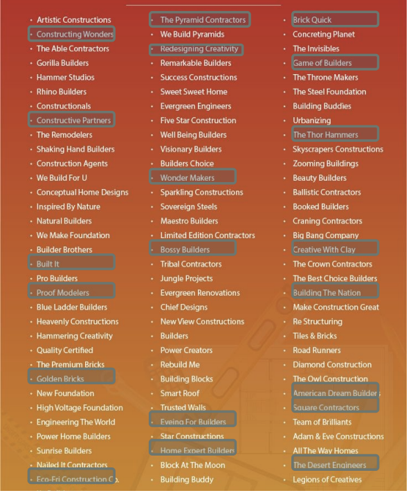
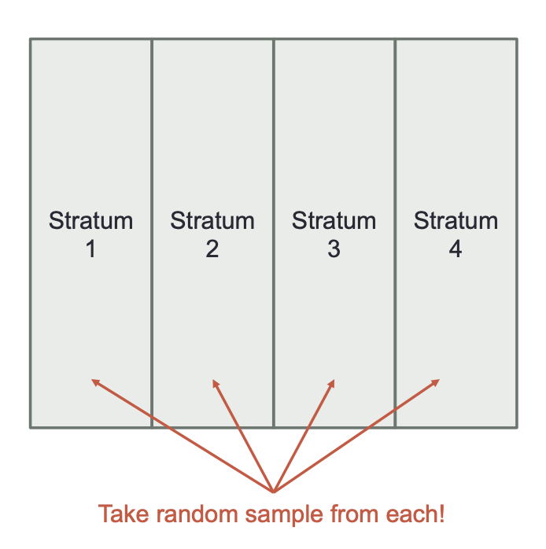
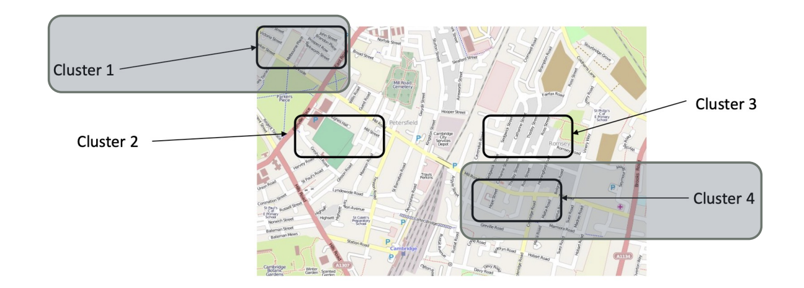
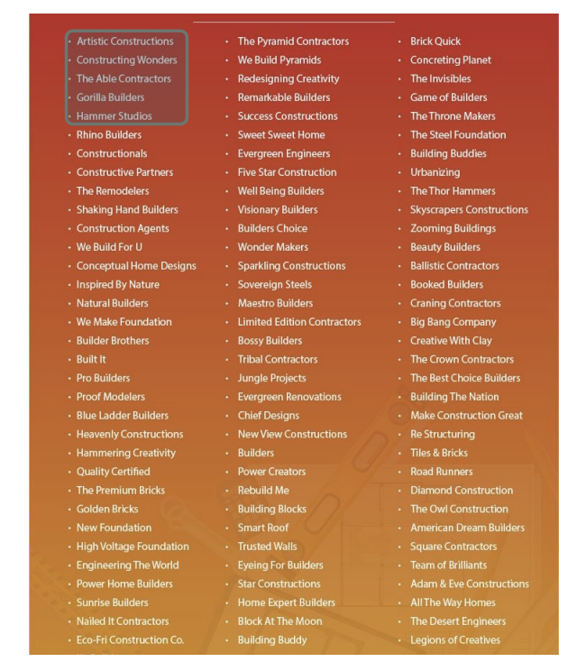
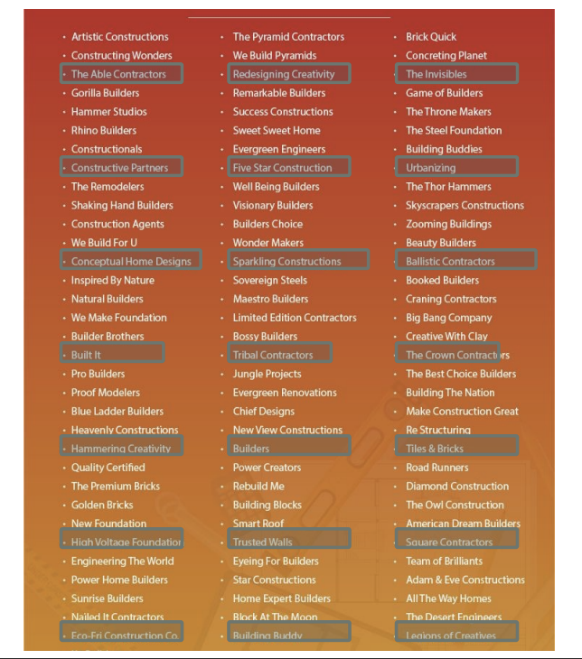

graph LR;
subgraph A[Population]
B(Sample)
end
There are three main pieces to statistics:
- Data collection
- Data analysis
- Inference
1 Data Collection
Population
- Set of all objects (usually too large to obtain accurate info)
- Example: The entire human population
Sample
- Subset of population
- Sampling frame is the actual list from which the sample is taken which may or may not equal the population
Parameters are measures that we compute from the population. Statistics are computed from the sample and they are estimating population parameters (point estimates).
flowchart LR
A[Population] --> B[Sample]
B --> C[Statistic]
C --> D[Parameter]
D --> A
2 Sampling Techniques
We need good sampling for good estimates and in sampling we incur bias.
Bias is when certain outcomes are favored over other outcomes in samples.
2.1 Common Types of Bias
- Selection Bias
- Undercoverage: frame and population are not equal
- Nonresponse: subject in sample cannot / will not respond or be measured
- Sampling Bias
- Convenience Sampling: selecting subjects based on accessibility and ease
- Voluntary sampling: subjects volunteer themselves–may not be representative
2.2 Common Sampling Techniques
2.2.1 Simple Random Sampling (SRS)
Sample items from population such that every possible sample of specified sizes has an equal chance of being selected

Advantages
- No statistical bias
- No prev. info about sample needed ahead of time
Disadvantages
- Expensive
- Hard to implement
- Need list of population
2.2.2 Stratified Random Sampling (STS)
Population is divided into subgroups, called strata, so that each member in the population belongs to only one strata.
Sample items from every strata. The sample size between groups does not need to be the same (e.g. if we know groups in pop. are in a 20:80 ratio)

Advantages
- Smaller sample sizes can achieve same accuracy as SRS
- More info about parts of population
Disadvantages
- Need info about population ahead of time to split on
2.2.3 Cluster Sampling
Similar to stratified where you group members of population into subgroups called clusters. You only talk to a sample of \(m\) clusters selected randomly.
In cluster sampling, you don’t necessarily believe there are differences between clusters.

Advantages
- Overcome issues with travel, time, expense
- Easier to implement than SRS or STS
Disadvantages
- Need info about population ahead of time to split on–but not total list.
- May have slight bias if random clusters aren’t representative
2.2.4 Systematic Sampling
Select every \(k^{th}\) item in the populatino after randomly selecting a starting point between 1 and \(k\).
\(k\) is determined as a ratio of population size over desired sample size.


Advantages
- Very easy to get sample
Disadvantages
- May be biased especialy if order of list of population matters
2.3 Example
A large worldwide financial company wnats to develop a new retirement plan for the company. They want to survey different managers of branches around the world to find out the most important strategies the new retirement plan should contain. They have 5000 branches worldwide and want to personally interview these branch managers. They have information about the banch size (small, medium, large) and the state/province location of the branch. They want to talk to 50 branch managers.
Develop four separate strategies to sample these branch managers based on the four different statistical sampling techniques discussed previously.
- SRS: Randomly sample 50 branches to interview the managers of
- STS: Stratify by size and select random samples from every strata
- Cluster: Randomly select sample of states/provinces, then select branches at random from those states/provinces
- Systematic: Select every 100th branch in list of branches starting from a random starting point between 1 and 100
Code
# Example of systematic sampling in Python
import numpy as np
indexes = np.arange(5000)
sample_size = 50
k = len(indexes) // sample_size
print(f'k: {k}')
print(f'Sample Size: {sample_size}')
start = np.random.randint(k + 1)
selected = indexes[start::k]
print(f'Length of selected: {len(selected)}')
indexes[start::k]k: 100
Sample Size: 50
Length of selected: 50array([ 77, 177, 277, 377, 477, 577, 677, 777, 877, 977, 1077,
1177, 1277, 1377, 1477, 1577, 1677, 1777, 1877, 1977, 2077, 2177,
2277, 2377, 2477, 2577, 2677, 2777, 2877, 2977, 3077, 3177, 3277,
3377, 3477, 3577, 3677, 3777, 3877, 3977, 4077, 4177, 4277, 4377,
4477, 4577, 4677, 4777, 4877, 4977])3 Types of Data
3.1 Qualitative vs. Quantitative
Quantitative data are numeric data that define value of quantity.
Qualitative data are data whose measurement scale is inherently categorical.
- Nominal data are categories with no logical ordering
- Ordinal data are categories with a logical order / only two ways to order the categories (binary is ordinal)
3.2 Time Series vs. Cross-sectional
Time series is a set of ordered data values observed at successive point in times. Each row might be indexed by time referring to a dependence in time.
Cross-sectional is a set of data values observed at a fixed point in time or where time is of no significance (could have time as a variable just that the response does not depend on it).